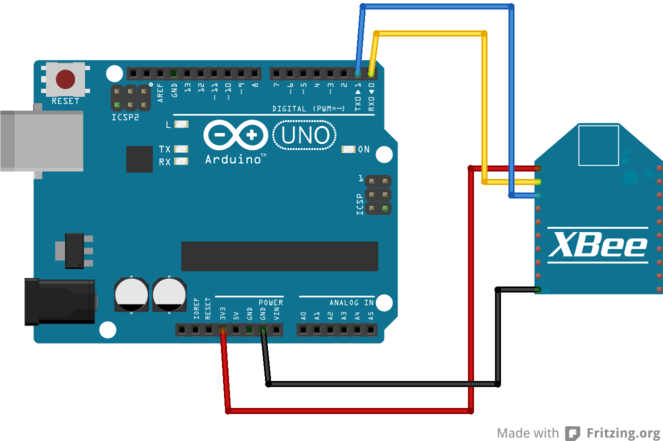

- Découverte de Xbee
- Topologie des réseaux
- Configurer son Xbee
- Communiquer via Xbee: ordi <-> Arduino
- Communiquer via Xbee: Arduino <-> Arduino
Au programme
Découverte de Xbee
Découverte de Xbee
Xbee est un module de communication sans fil reposant sur la norme 802.15.4 et le protocole ZigBee.
Il s'agit d'une norme pour les réseaux sans fil personnels à faible consommation (LR-WPAN : Low Rate Wireless Personal Area Network)
Découverte de Xbee
Les principales caractéristiques du XBee 1:
- portée : ~30m max en milieu urbain et intérieur, ~90m en extérieur dégagé
- faible débit : 250kbps
- faible consommation : ~50mA à 3.3V
- communication série (UART)
- mise en place de réseaux point à point ou en étoile
- cout relativement peu élevé (~25€)
- sécurité : chiffrement AES 128 bits
Découverte de Xbee
- communication directe depuis entrées/sorties analogiques et digitales
- I/O "line passing" : un DIO (configuré en input) sur un Xbee active un DIO (configuré en output) sur un autre Xbee
Topologie des réseaux
Point à point

Point à point
- Mode par défaut
- Les deux Xbee doivent être sur le même réseau (PAN ID) et le même canal RF
- Envoi unicast: envoi sur une adresse spécifique du réseau.
- le receveur envoie un message de confirmation de réception (ACK) à l'emmetteur
- l'emmetteur renvoie le message jusqu'à 3 fois ou jusqu'à réception de l'ACK
- Envoi broadcast: envoi sur toutes les adresses du réseau.
- pas d'ACK des receveurs
- se fait via l'adresse de broadcast
En étoile

En étoile
- Un coordinateur et des "end devices" s'y connectant
Nos premières commandes AT
Configurer Xbee
Nos premières commandes AT
Démarrer X-CTU, choisir le port série du Xbee puis cliquer sur l'onglet Terminal
Nos premières commandes AT
+++: passer en mode commande AT, attendre le OK de retourATID(+ param de 0000 à FFFF) : lit ou modifie l'ID du réseau Xbee (PAN ID)ATMY(+ param de 0000 à FFFF) : lit ou modifie l'adresse du XbeeATWR: sauve les paramètres dans la mémoire du Xbee, attendre le OK de retourATRE: restaure les paramêtres par défaut d'usine du XBeeATCN: quitte le mode configuration
Communiquer via Xbee
ordi <-> Arduino
Montage Xbee <-> Arduino

Configuration du Xbee "ordi"
- Partir d'une configuration d'usine
ATIDà 1ATMYà 0- Sauvegarder et quitter le mode commande
Configuration du Xbee "arduino"
- Partir d'une configuration d'usine
ATIDà 1ATMYà 1- Sauvegarder et quitter le mode commande
Programmation de l'arduino
Ecrire un programme qui :
- allume la led 13 lorsque
1est reçu - éteind la led 13 lorsque
0est reçu
Lorsque le Xbee est branché sur l'arduino cela condamne l'upload de programme. Débrancher les cables Rx et Tx de l'arduino avant l'upload d'un nouveau programme.
Taper ces 1 et 0 dans X-CTU, connecté au Xbee "ordi" et regarder la led s'allumer et s'éteindre.
Modifier le programme à votre guise.
Communiquer via Xbee
Arduino <-> Arduino
Pouet
<Thank You!/>
Any questions?